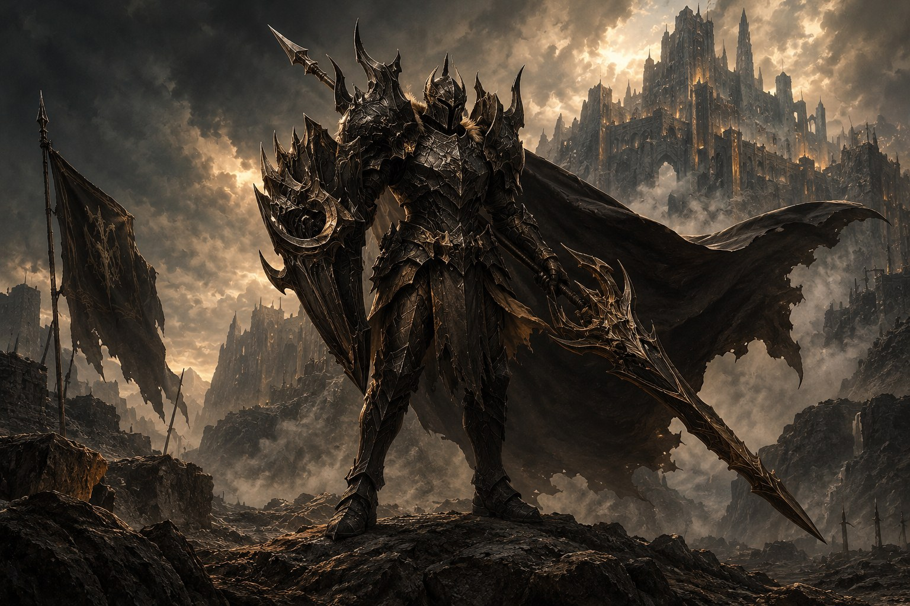
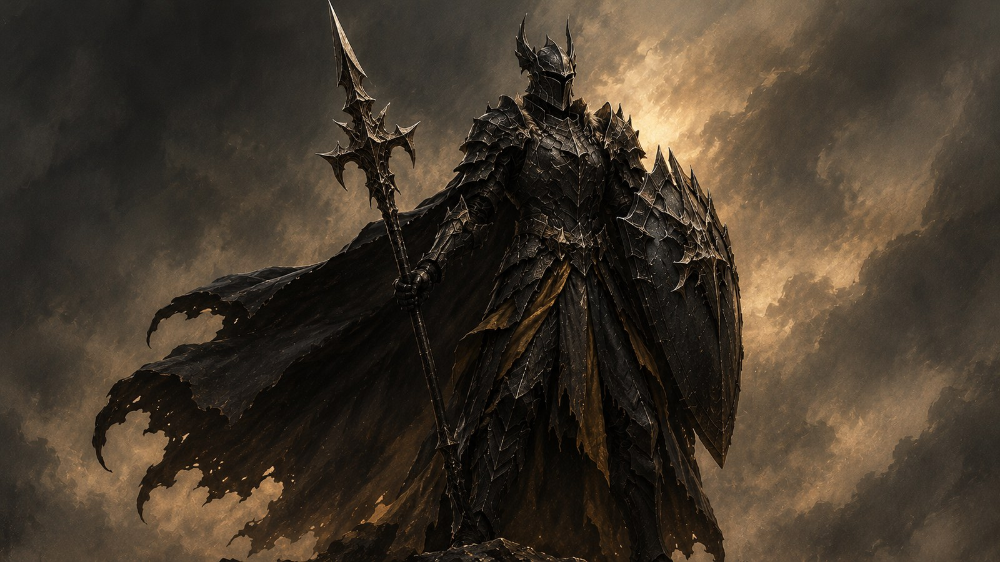

Kheltan, A Forja da Guerra

O Segundo Filho Honrado
O segundo filho de Belford era bruto, direto e honrado. Acreditava que a guerra não se vence com defesa, mas com preparo. Fundou, então, Kheltan, no coração das montanhas, onde a terra é dura, o povo mais ainda.
Lá, as armas são forjadas na hora do desafio, entregues apenas ao guerreiro que vai usá-la. É o lar das arenas cerimoniais, onde jovens cavaleiros criam suas próprias armas como rito de passagem para provar o seu valor.
Das Cinzas, o Aço
Quando os primeiros dragões desceram sobre a terra, Kheltan foi o primeiro a arder. Mas foi também o primeiro a se erguer das cinzas mais fortes. E das cinzas surgiu o aço mais resistente de Belford, e os maiores forjadores do continente, endurecido com escamas de dragão.
As forjas de Kheltan funcionam dia e noite, o som dos martelos ecoando pelas montanhas como um coração pulsante. Cada arma criada carrega não apenas metal, mas a determinação e o espírito de seu criador.

As Arenas Cerimoniais
No centro de Kheltan estão as grandes arenas, onde jovens guerreiros provam seu valor. Não é apenas uma demonstração de força, mas um ritual sagrado onde cada golpe de martelo e cada faísca é uma oração aos deuses da guerra.
A tradição diz que uma arma verdadeira só nasce quando o guerreiro derrama seu próprio suor e sangue na forja. Muitos falham, mas aqueles que conseguem criam lâminas que se tornam lendas — espadas que cortam escamas de dragão, lanças que perfuram a couraça mais resistente.
O Berço de Thorfinn
Kheltan é a terra natal de Thorfinn, o Cavaleiro Negro. Filho do soldado comandante do reino, ele cresceu ouvindo os martelos das forjas e os gritos das arenas. Mesmo sendo reprovado em seu primeiro teste, sua determinação o levou a um caminho que nenhum outro guerreiro havia trilhado.
A tradição dos guerreiros de Kheltan diz que qualquer homem ou mulher tem direito a uma luta contra quantos soldados quiser — uma prova de que a honra e a habilidade estão acima de hierarquias. Foi essa tradição que Thorfinn seguiu ao retornar, enfrentando Rhudur, o sádico, e provando que o treinamento nas entranhas de um dragão o havia transformado em algo muito mais do que um simples soldado.
Cultura de Honra
A cultura de Kheltan é baseada na honra direta e na força bruta. Não há espaço para subterfúgios ou mentiras — um guerreiro de Kheltan fala com a espada e age com convicção. A palavra dada é mais forte que qualquer contrato, e a vergonha é pior que a morte.
Os ferreiros de Kheltan são respeitados tanto quanto os soldados, pois entendem que uma boa arma pode fazer a diferença entre a vitória e a derrota. Cada lâmina forjada carrega a assinatura de seu criador, e os melhores ferreiros são conhecidos por todo Belford.
As Montanhas Sagradas
As montanhas de Kheltan não são apenas barreiras naturais — são consideradas sagradas. Dizem que os picos mais altos tocam o céu onde os deuses da guerra habitam. Muitos guerreiros fazem peregrinações até os cumes para buscar bênçãos antes de grandes batalhas.
Nas cavernas profundas das montanhas, minerais raros são extraídos — metais que só existem em Kheltan, usados para criar armas com propriedades especiais. Esses metais, combinados com escamas de dragão, criam as lâminas mais temidas de todo o continente.
Legado de Fogo
O legado do segundo filho de Belford vive em cada faísca das forjas, em cada grito de vitória nas arenas, em cada arma que protege o continente. Kheltan não é apenas um reino — é a forja onde a coragem é temperada e a honra é forjada.
E quando os dragões descem dos céus, é com o aço de Kheltan que os guerreiros de Belford respondem, pois sabem que cada lâmina carrega o peso de séculos de tradição, o calor das forjas sagradas e a determinação de um povo que nunca aprendeu a se render.